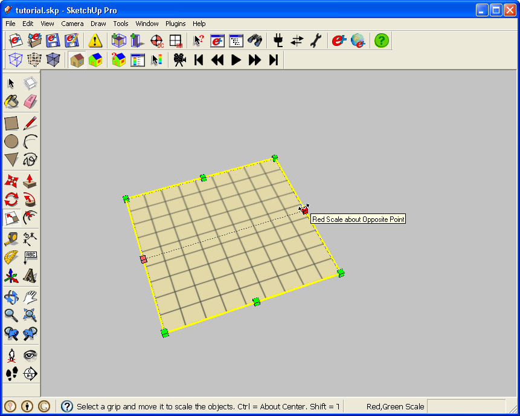

|
|
Creating and modifying EnergyPlus Illuminance Maps
Making a new Illuminance Map
- Enter into the Zone where you want to place the Illuminance Map. If you are not in a zone you will see this error. If you don't have any objects to click on to activate the Zone, you can select the Zone in SketchUp's Outliner Window.

(Credit: David Goldwasser / NREL)
- Click on the toolbar button to activate the tool. Click on the model where you want to insert the map. After you click the scale tool will be active. You will see 8 pins you can use to scale. The edges scale in one direction, the corner will scale in two directions.

(Credit: David Goldwasser / NREL)
- See (Making Changes) below to learn how to relocate and resize the Illuminance Map units once you have placed it.
- Similar to Daylighting Controls, you can't add more than one Illuminance Map object to an EnergyPlus Zone.
- The New Illuminance Map Tool isn't the only way to add EnergyPlus Illuminance Map to your model (see making copies below).
- To get results out of EnergyPlus for your Illuminance Map you also need to make sure Daylighting Controls and lights are part of your energy model. The lights can be added through OpenStudio with the Zone Load tool, but you could also add lights to the IDF file with another application.
Making changes and modifications
- You can change the position and size of the map using the Scale Tool as shown below. Notice how you have the same number of gridlines after scaling the Illuminance Map.
(Credit: David Goldwasser / NREL)
- If you just want to move, but not resize it you can use the Move Tool
- Or you can change the position and size of the map through the Object Info dialog box.
(Credit: David Goldwasser / NREL)
- The Object Info dialog box is also where you change attributes for the map. For Example, the number of "x" and "y" gridpoints. The texture on the map will reflect the values you have for the gridpoints. The map above has 50x10 gird points, vs. 10x10 gridpoints on the previous image.
Making copies of Illuminance Maps
- As an alternative to using the New Illuminance Map Tool, you can copy your map from one Zone and paste it into another.
Using OpenStudio to validate your Il luminance Maps in existing IDF files
- If you import an IDF into OpenStudio any Il luminance Maps you have will show up in OpenStudio. You can use OpenStudio to quickly check and see if the Il luminance Maps and their data points are where you expected them to be. If you need to add or move any, then you can make the changes in OpenStudio and save back to your IDF file.
|
|
|